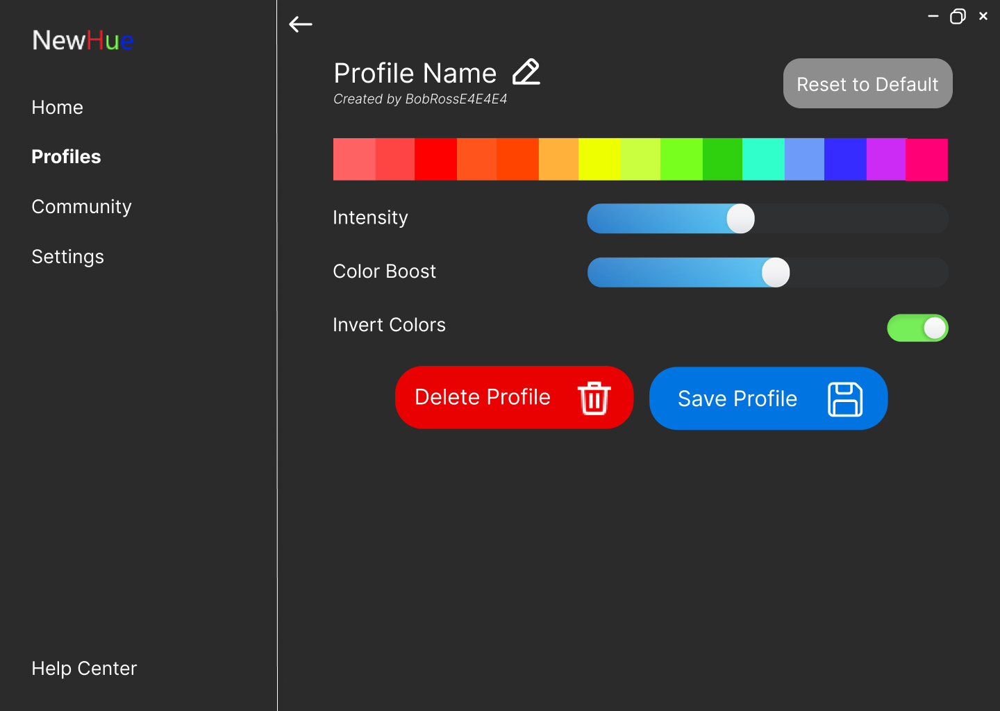
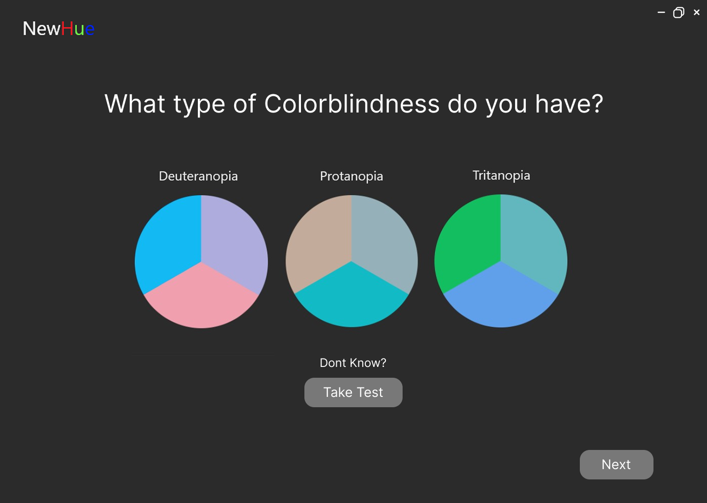
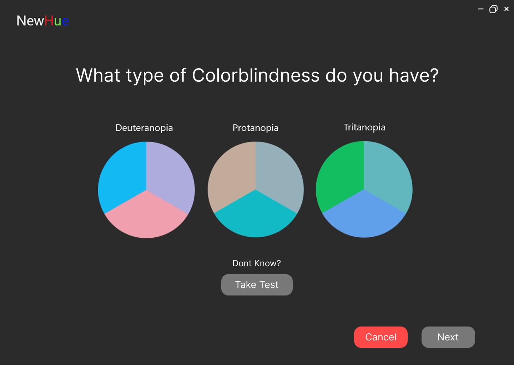

Heuristic Evaluation
We conducted a heuristic evaluation with Team Translate Mate (Eddie and Ronnie) of our Figma prototype using Nielsen's 10 Usability Heuristics. Each heuristic was reviewed and scored based on the prototype’s ability to meet the principle. Below is a table summarizing their findings, followed by detailed commentary on each point.
| Heuristic | Score (0–5) | Comments |
|---|---|---|
| Visibility of system status | 1 | No live feedback due to static prototype design. Users don’t receive real-time confirmation of interactions. |
| Match between system and the real world | 2 | Terminology aligns with user expectations (e.g., colorblind types), and high-contrast black and white default improves clarity for colorblind users. |
| User control and freedom | 1 | Undo and delete options are present but lack a consistent back button. Users rely on the browser’s back button instead. |
| Consistency and standards | 2 | Consistent visual styling and naming conventions. Test and manual profile creation options match platform expectations. |
| Error prevention | 2 | No live validation or error prompts due to static design, but layout encourages safe adjustments. Suggest adding "Reset" on filter pages. |
| Recognition rather than recall | 1 | Main navigation is persistent. However, multiple profile editing pages cause confusion — should consolidate into one. |
| Flexibility and efficiency of use | 1 | Expert users may benefit from quick toggles, but novice users may find unlabeled switches confusing (e.g., green toggle on Home). |
| Aesthetic and minimalist design | 1 | Minimalist overall, but has redundancy (e.g., separate login/register pages, duplicate profile edit views). |
| Help users recognize, diagnose, and recover from errors | 2 | Prototype lacks dynamic error messaging, but static layout includes clear, supportive cues and confirmation elements. |
| Help and documentation | 0 | Help Center link present in footer on each page, but no detailed documentation or tutorials visible in the prototype. |
General Recommendations
- Combine Login and Register pages into one to reduce redundancy.
- Merge Home and Edit Profile — both control the same filter settings.
- Remove Profiles (With Profiles) section as only one profile is needed. Eliminate left/right arrows.
- Standardize toggle button color — use either green or blue, not both.
Revisions Made
Below is a table showing visual comparisons of key design revisions made after heuristic evaluation and user feedback:
| Change # | Before | After |
|---|---|---|
| 1 |  | |
| 2 |  |  |